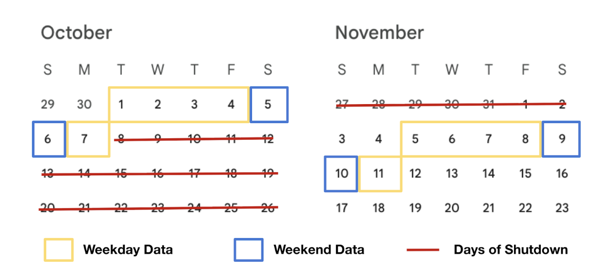

MBTA Orange Line Performance Before & After the October 2024 Shutdown
Colin Chu, Alex Ferguson, Anish Sanghi • DS4200 Fall 2025
Project Overview
The month-long Orange Line shutdown in October 2024 replaced 5.2 miles of rail and eliminated virtually all slow zones. Riders immediately noticed faster trips, but by how much exactly? And did reliability improve too?
This project answers those questions using public headway data from MBTA’s Blue Book Portal. Due to the service discrepancies between weekdays and weekends, we split our data into an equal number of pre- and post-shutdown weekdays (Oct 1–4, 7), (Nov 5-8, 11) and weekends (Oct 5-6), (Nov 9-10), according to the calendar below:

For this segment, we measured:
Speed → The end-to-end journey times (18-station trunk segment - Green St to Malden Center Northbound) and the average speed between each station segment
Reliability/Frequency → Headways (number of seconds between trains)
Completed tasks:
Median journey time comparison (pre vs. post, weekdays & weekends)
Average headways by stop, by hour, and daily distribution
For this project, we used public headway data from MBTA’s Blue Book Portal, specifically the ‘MBTA Rapid Transit Headways 2024’ dataset, which includes detailed information about each subway trip between stations. For the scope of our project, we filtered the dataset to just our two weeks: Oct 1-7 and Nov 5-11 2024, and trips only for the Orange Line heading north from Forest Hills to Oak Grove. After trimming and filtering, our dataset has about 36000 rows and 10 features, including service date, route and trip ids, parent station, stop name, time of departure, headway in seconds, and added features with information about if its a weekday/weekend, the hour and which week it belongs to.
Static Visualization 1: Average Headways by Stop
Design justification:
• Mark: Grouped bar — ideal for direct pre/post comparison per stop
• Stops sorted by improvement magnitude → biggest winners appear first
• Color: pre = orange, post = green ("green = better")
• Faceted by weekday/weekend
• Static format makes the main story immediately visible without any interaction.
Static Visualization 2: Daily Average Headway Distributions
Design justification:
• Mark: Boxplot — perfect for showing median + variability day-to-day
• Nearly identical boxes pre/post → instantly proves reliability did not improve
• Separate panels for weekdays vs. weekends respect different service patterns.
Interactive Visualization 1: Average Headway by Time of Day
How to use this interactive headway graph:
The left panel shows weekdays (solid lines)
The right panel shows weekends (dashed lines)
Use the Weeks radio buttons at the top:
• Both → navy blue = Pre-shutdown, gold = Post-shutdown
• Week 1 (Pre) → only navy blue highlighted
• Week 2 (Post) → only gold highlighted
Hover any point to see the exact average headway in minutes for that hour
Design justification:
• Mark: Line and point, gives insight to headways at different times of the day + judge headways hourly to compare changes in parts of the day and identify outliers
Point is used for users to hover over for the tooltip to look at the average headway for each hour of both weeks
• X-axis: hour of each day
• Y-axis: average headway (minutes)
• Separate panels for weekdays vs. weekends respect different service patterns
Interactive Visualization 2: Map of Average Speed by Segment
After analyzing the aggregated data for all stations on the line, we wanted to see which specific parts of track were problematic. To do this, we appended a manually-gathered dictionary of the latitude and longitude coordinates for each station, and rendered them as points on a Plotly basemap. Speeds were calculated by dividing the Cartesian distance between stations by the difference in time, which was found by sorting the data by train ID and subtracting the times a unique train arrived at consecutive stations. The resulting speeds were aggregated by segment and mapped to a colorscheme for display. The data was also set up for further cleaning by eliminating unrealistic speed measurements (over 60mph), as well as speed measurements between non-consecutive stations.
How to Use the Segment Speed Map:
There are four sub-maps:
Top-left: Weekdays Pre-shutdown | Top-right: Weekdays Post-shutdown
Bottom-left: Weekends Pre-shutdown | Bottom-right: Weekends Post-shutdown
Hover over any colored line segment to show the average speed (mph), the range in individual speeds measured, as well as the number of included and excluded data points. You can also hover over a station to show its name
Use mouse scroll to zoom, drag to pan, or click the +/− buttons
This map demonstrates how low the speeds of the downtown segment are, as trains have to make frequent stops and spend a larger portion of their time decelerating, stopping, and accelerating. The segments closer to end stations, especially the segment between Wellington and Malden Center, showed the highest average speeds. Interestingly, the segment of the Southwest Corridor (between Back Bay and Forest Hills) has a high variability in speed. Between Roxbury Crossing and Ruggles trains go nearly 25mph on average, but just two stations to the south the average train lurches along at 7mph between Stony Brook and Jackson Square. We can infer that this difference is caused by track quality, especially because the two segments are part of the same protected right-of-way.
Interactive Visualization 3: Map of Speed Improvement by Segment
After analyzing which track segments tend to be the slowest, we decided to see which portions of the line improved the most after the shutdown. We calculated the difference in speed post-shutdown compared to pre-shutdown, and recolored the line segments accordingly.
How to Use the Speed Improvement Map:
The two sub-maps correspond with weekday data on the left and weekend data on the right. Hover over any colored line segment to see a tooltip containing the segment name, the calculated change in speed post-shutdown, and the number of data points measured for the segment.
You can also hover over a station to show its name, and scroll to zoom using a mouse or by clicking the +/− buttons
This map reveals that the shorter segments downtown (which had the least room for improvement) only experienced slightly positive or even negative speed changes after the shutdown. Track segments closer to the terminal stations saw the most improvement, particularly on segments of the Southwest Corridor where speed increased anywhere between 5 and 10 extra mph. The most improved segment by far was the previously mentioned stretch between Stony Brook and Jackson Square, whose speeds are now almost equal to the Roxbury Crossing - Ruggles segment. Overall, weekends showed higher speed improvements than weekdays, which is likely due to the reduced train volume which results in fewer data points.
Design justification for the speed map:
• Mark: Colored geographic line segments
• Position: real lat/lon coordinates → accurate spatial context
• Color: cividis blue/yellow coloscheme used for colorblind accessibility + greyscale advantages
• 2×2 facet grid clearly separates pre/post and weekday/weekend
• Hover + zoom/pan interactivity reveals precise segment-level improvements
Conclusion – What We Learned
The October 2024 Orange Line shutdown was a resounding success on speed — the speed map shows massive gains across nearly the entire line, especially in the repaired Southwest Corridor.
On reliability and frequency, we can see that:
• Stop-by-stop headways: almost no change, leans towards weekdays during week 2 performing worse even
• Daily distributions: identical boxplots, also leans towards weekdays during week 2 performing worse
• Hourly patterns: slight improvement on headways during 11am-1pm, discrepancies during week 2 are explained by outliers at 1 am so overall slight improvement after shutdown
Final verdict: Riders now enjoy dramatically faster trips, and have very slight improvements on headways during specific hours. Future efforts must target operations, scheduling, and train availability — not just infrastructure.